把 Claude Code 變成
可治理的工程夥伴
以一個真實的全端購物車專案為主線，完整示範 SDD 規格先行、TDD 自主迴圈、Skill 設計、背景 Agent、權限模式、Context 管理與 Harness Engineering——讓 Claude 變成可預測、可治理、可長期維護的工程夥伴，而不是看心情產出的副駕駛。
Git、GitHub 與 Claude Code 起手式
先建立正確的開發起手式，讓學員理解 Claude Code 不是取代版本控制，而是強化版本控制與專案治理。
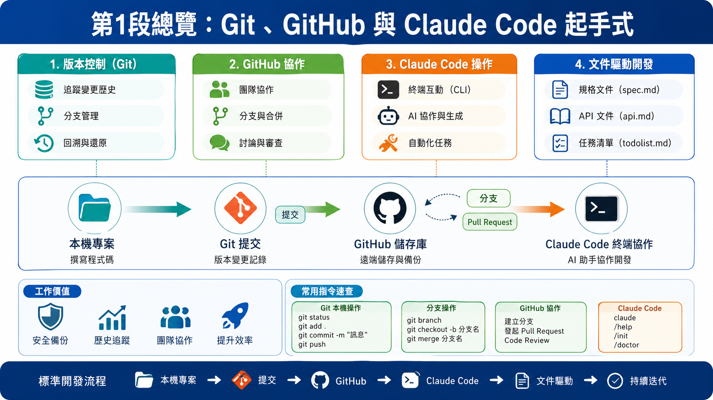
1·1環境安裝、登入與五種操作模式
Claude Code 安裝後共用的入門路徑：claude doctor 健檢 → claude 啟動 → /login OAuth。本節最關鍵的概念是「五種權限模式」——它們決定了 Claude 在你機器上能做什麼、要不要每次徵求同意。
1·2介面導覽 × CLAUDE.md 共識契約
CLAUDE.md 是 Claude 每次啟動都會自動讀取的「共識契約」——把規則寫在這裡，就不用每次對話重複說明。
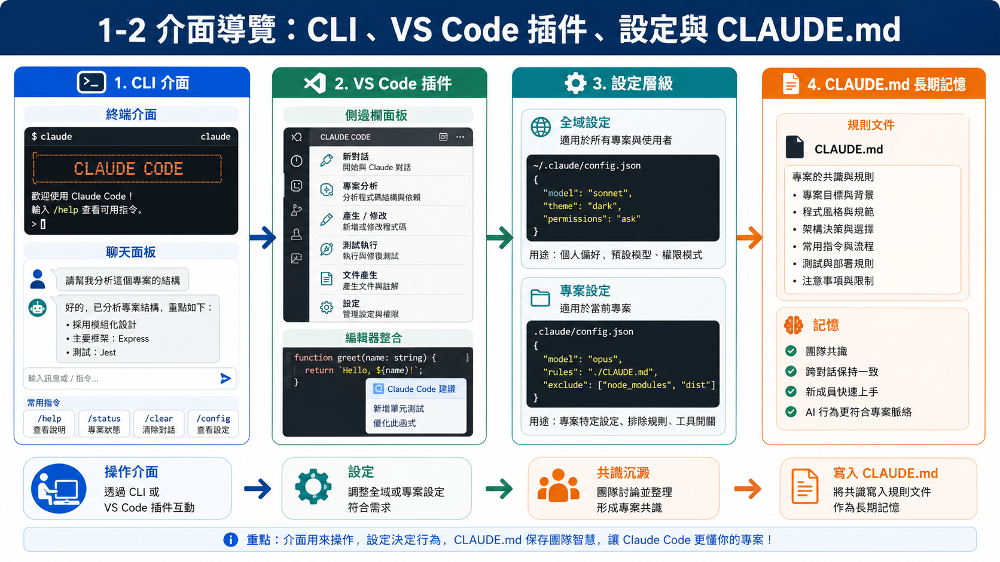
1·3Docker 與 AI 操作資料庫
不需背 Docker 指令，直接用自然語言叫 Claude 產出 docker-compose.yml、啟動 PostgreSQL、檢查容器狀態，並同步回填 Node.js 連線設定。
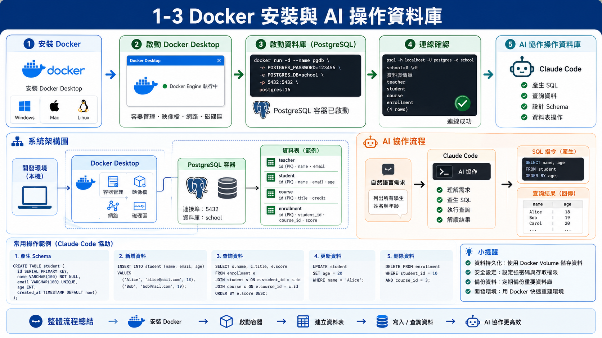
1·4Git × gh CLI 協作模式
不用死背指令——直接用自然語言告訴 Claude 你要做什麼，Claude 會產出並執行對應的 git / gh 指令，並寫好 commit message。
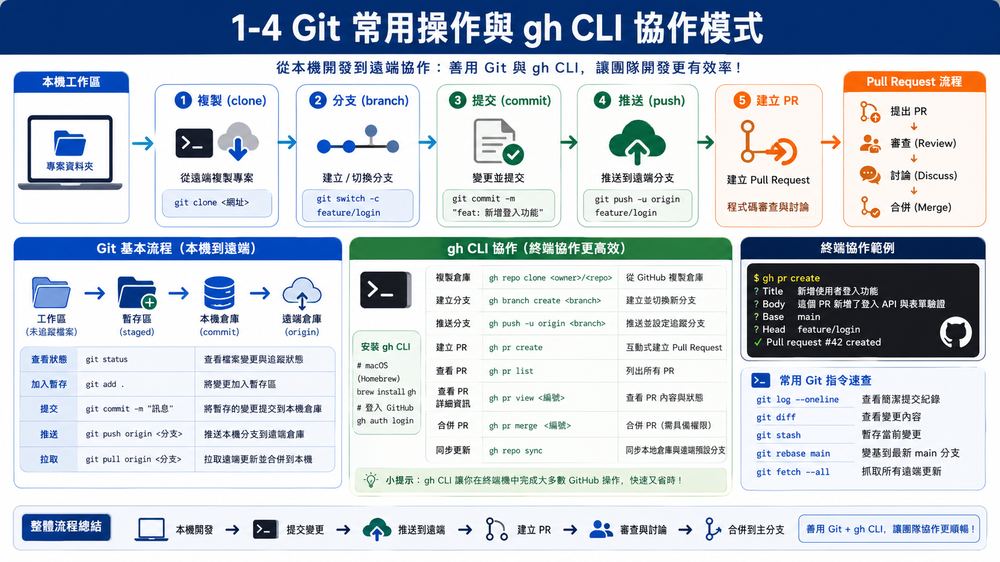
全端主線實作 · SDD → TDD → E2E
從規格先行（SDD）出發，用全端購物車專案實作完整展示 Claude Code 如何參與設計、撰寫、測試、修正與整合，而不是只做片段生成。
2·1SDD 規格先行 · 與 Claude 共同撰寫 spec.md
SDD（Specification-Driven Development）的精神是：規格不是給人看的文件，而是「你與 Claude 的共識契約」。每次任務前 @spec.md 讓 Claude 取得完整上下文，不需重複解釋。
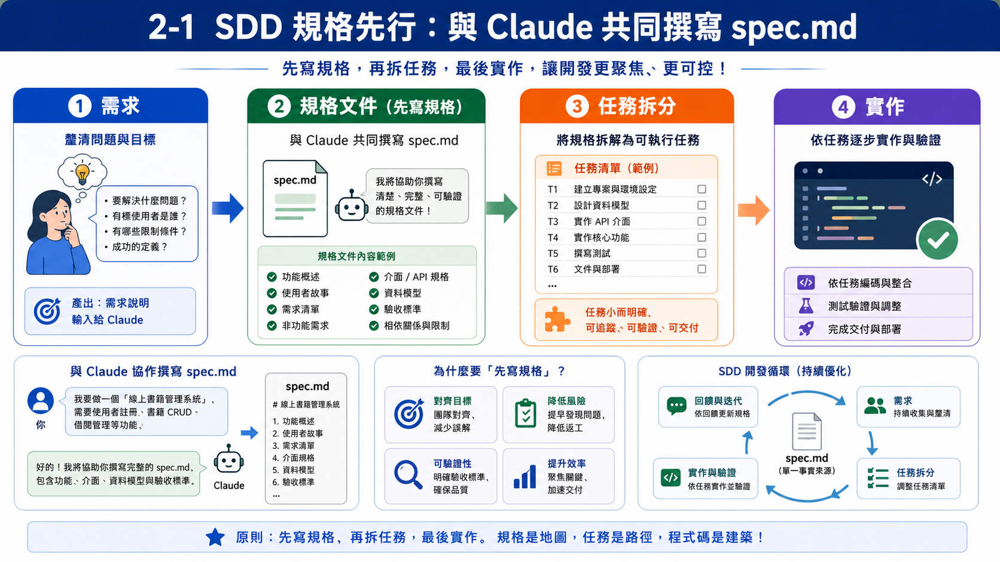
2·2後端生成 × TDD 先行 × 自主修正循環
Red → Green → Refactor。為什麼 AI 開發特別適合 TDD：Claude 不「猜測」需求，測試就是最精確的規格說明。
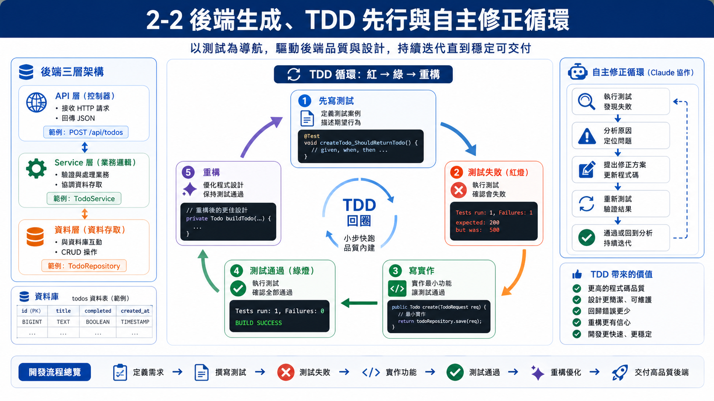
2·3前端鷹架與 API 串接
以 React + Vite 建立商品列表頁、購物車抽屜（CartDrawer）與結帳頁。先以 mockProducts.ts 跑起 UI，確認視覺後再切換串接 API。
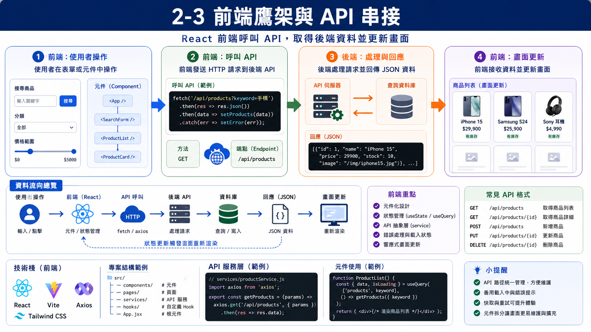
2·4Context 管理 × 真實除錯
除錯之所以困難，常常不是「找不到 bug」，更常是「Claude 在錯誤的上下文中打轉」。本節同步教兩件事：(1) 主動管理 Context；(2) 透過購物車三個真實 bug 把 Context 指令套用到實戰。
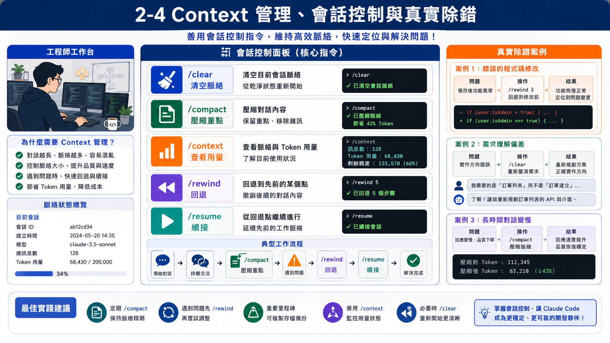
真實除錯三件組 · Context 操作策略
把上圖的 Context 操作策略套用到購物車三個真實 bug——從最簡單的 /bug + /compact，到中階的兩檔同時引入，再到最高階的 Esc Esc → Restore code only。
自動化、Skill 與背景 Agent
讓學員看到 Claude Code 不只會寫程式，還能自動操作畫面、把規則無程式化為 Skill、以及把耗時長任務交給背景 Agent。
3·1agent-browser · 自動操作瀏覽器產生 SOP
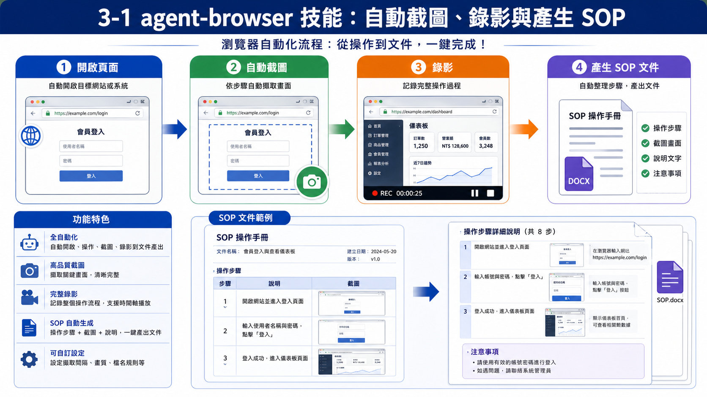
3·2skill-creator · 企業資安規範 Skill 與 Hooks
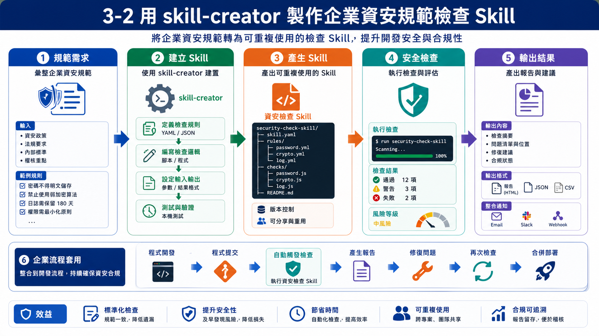
3·3開發輔助 Skill 速查 · 滑鼠移上去看用法
鍵盤快捷鍵
3·4/agent · 背景長任務與 Git Worktrees
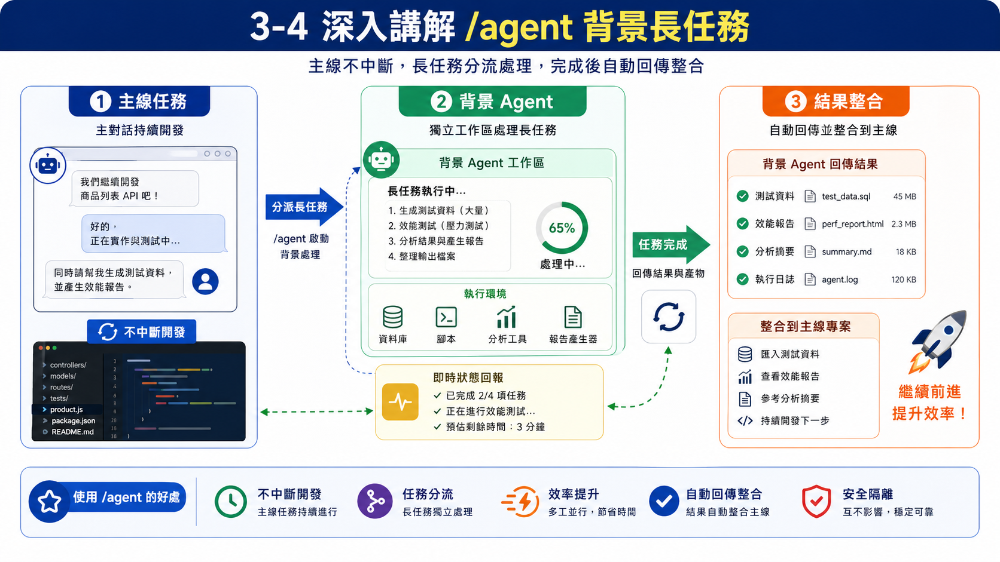
Review、程式優化與 superpowers 收尾
建立一套寫完程式後的自我審查與優化流程，讓 Claude Code 變成可長期維護的工程夥伴。
4·1/review × /simplify · 內建品質指令
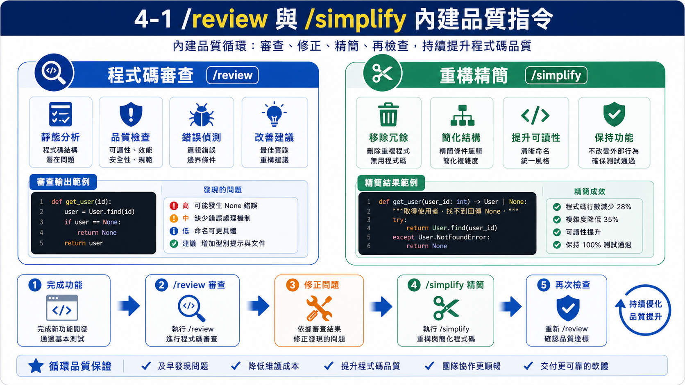
4·2Slash Commands 完整工作流
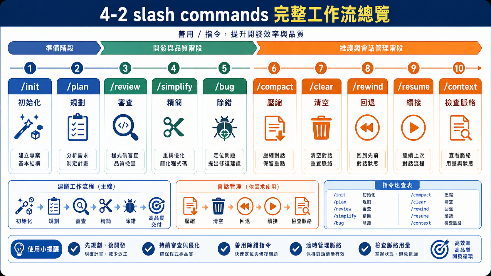
4·3superpowers · spec → TDD → e2e 完整管線
AI 寫程式最大的風險不是「寫錯」，而是「自信地寫錯然後說已經完成」。superpowers 用 Iron Laws（鐵律）把開發紀律寫成強制執行的 Skill——不是建議、不是參考。
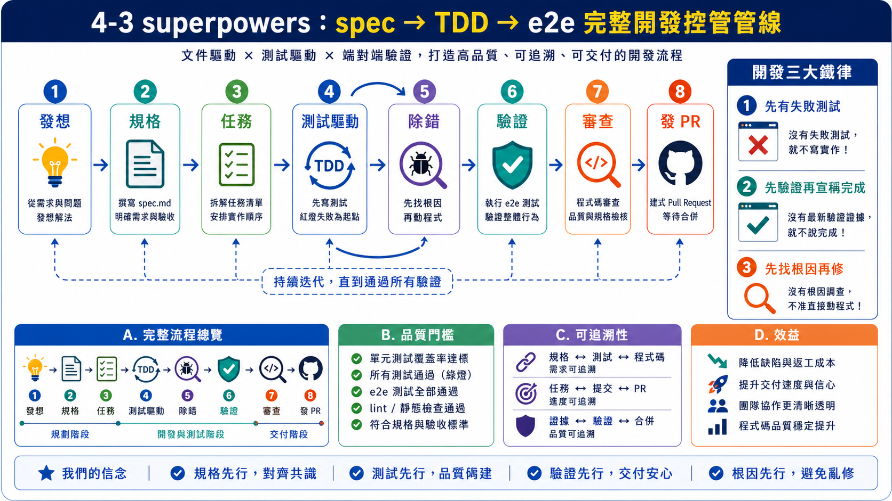
Harness Engineering · 你一直在做的事，現在有了名字
學員在前四段已接觸 CLAUDE.md、Hooks、/agent、Git Worktrees、TDD 迴圈、/review 與 /simplify——本節幫助他們理解這些實踐共同構成一套 Harness。
點選 Harness 七大類 · 看實作對應
三大支柱與升級路徑
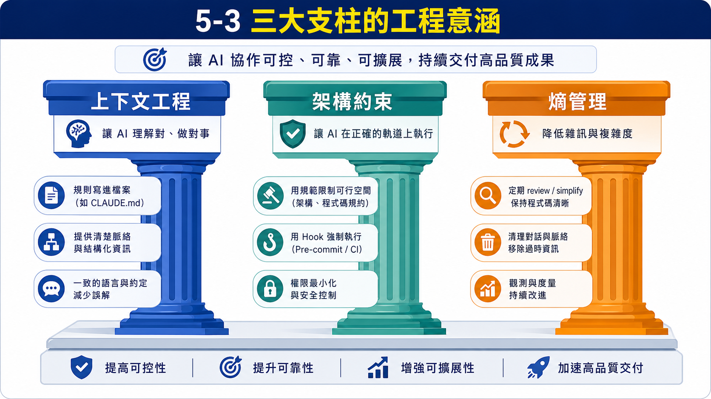
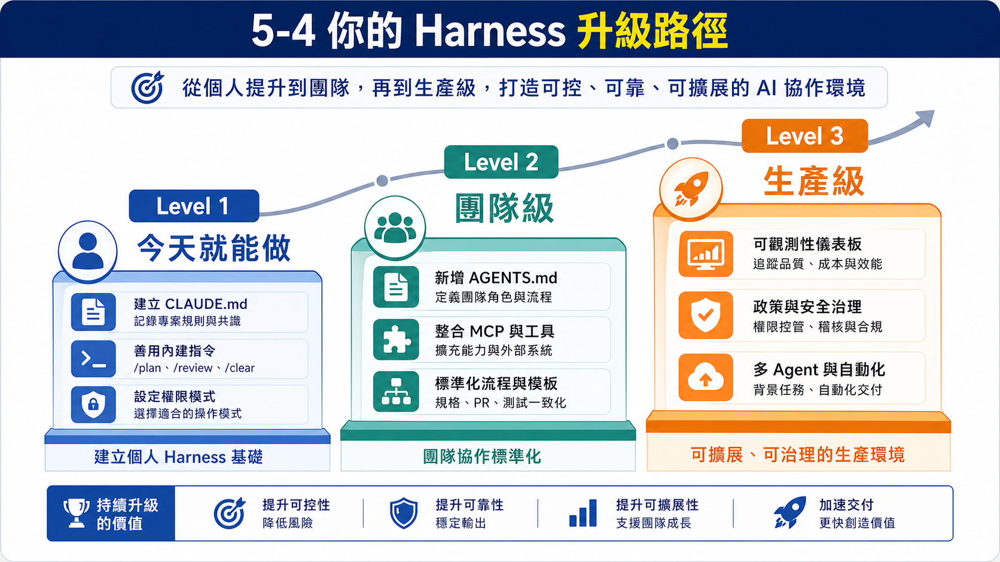
- 30 分鐘：在你手上的專案根目錄建立
CLAUDE.md，寫清架構規範、禁止行為、技術棧版本——Claude 從此不會忘。 - 下次卡住時：先按
/context看 context 被誰吃了，再決定要/compact還是/clear。 - 下次 Claude 走錯方向：按
Esc Esc→ 選 Restore code only，比手動 git checkout 快十倍。